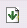
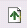
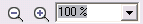
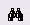

Printing and Exporting |
The Print Preview window allows the user to preview the current form of the Job in a draft PDF format.
Selecting the Print Preview button anytime during the form editing process will open the Print Preview window.

 |
Browse down through the pages of the form. |
 |
Browse up through the pages of the form. |
| Browse back through the pages of the form. | |
| Browse forward through the pages of the form. | |
 |
Zoom in and out of the print preview using the zoom icons. Alternatively set or choose a numeric zoom value in the field. |
| Switch the view between single page and multiple pages. | |
 |
Opens the find dialog window allowing users to search the document for any words. |
| Opens the print dialog window allowing users to print off the form. | |
| Collapse and expand the table of contents. | |
| Export the form to a Portable Document Format (PDF). |
See also:
Previewing and Printing a Draft Form
Editing a Form
Issuing a Form
Recalling forms